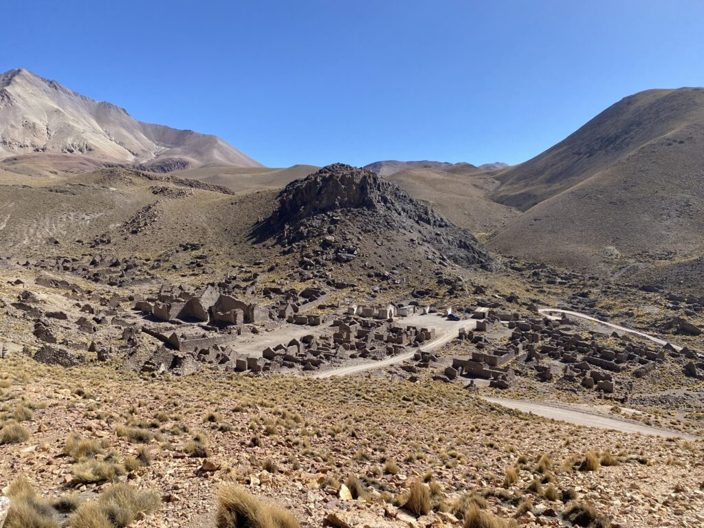
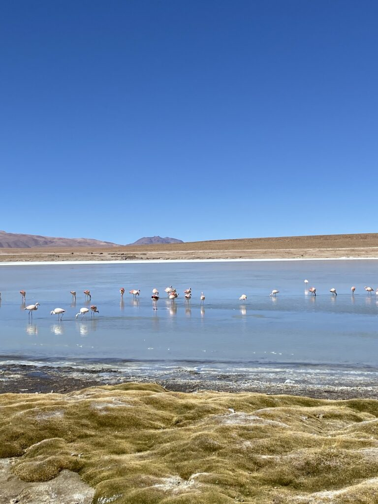
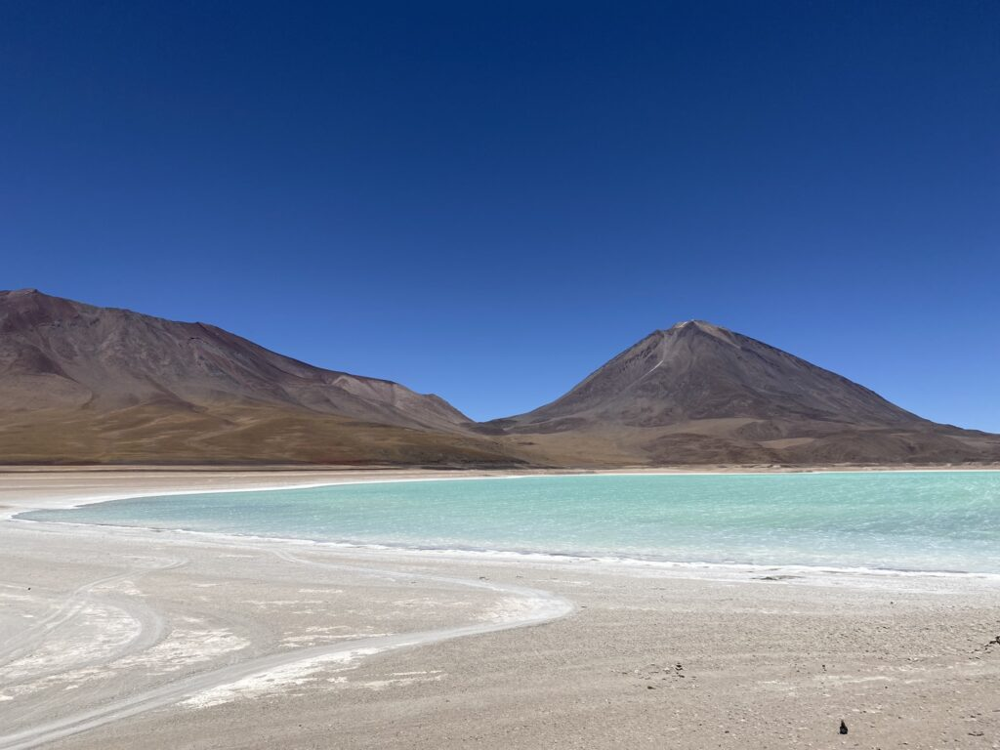
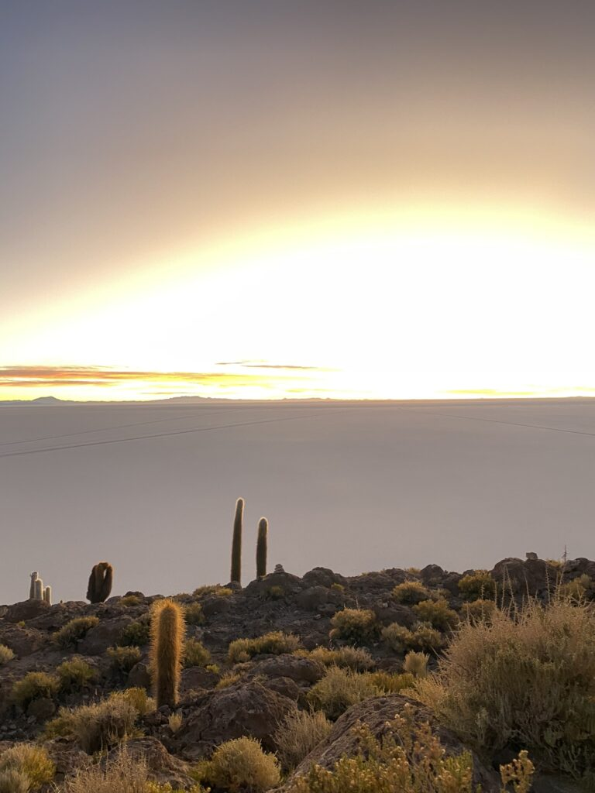
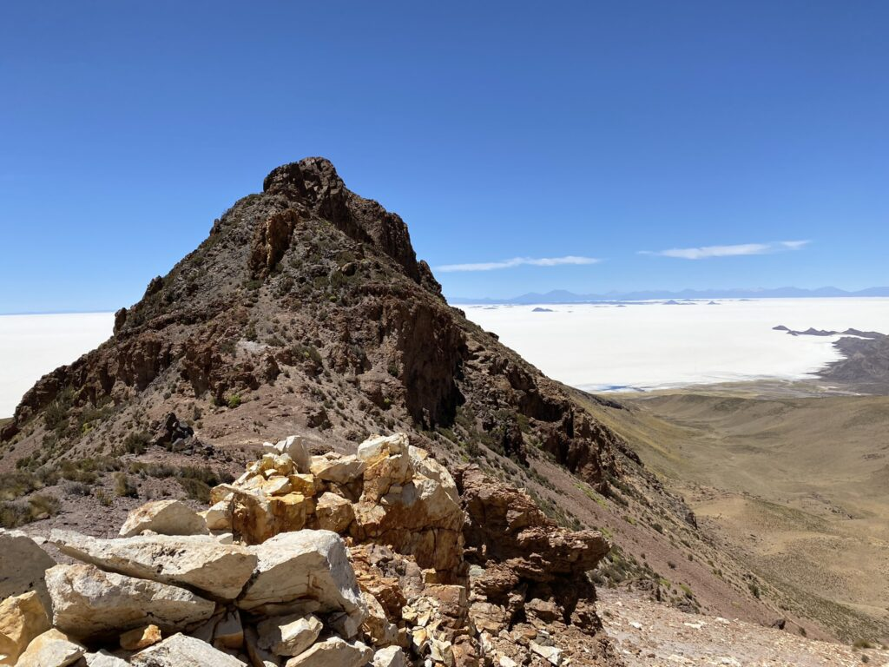
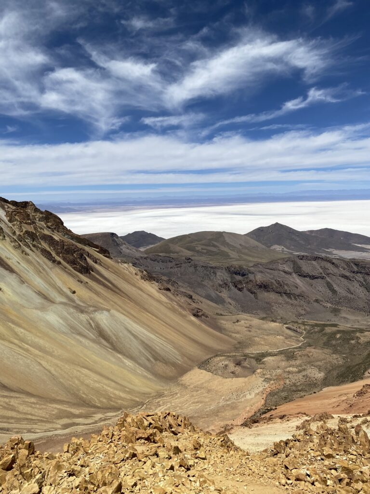
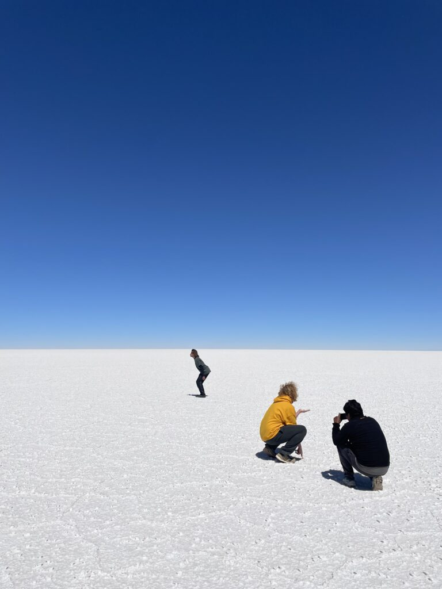
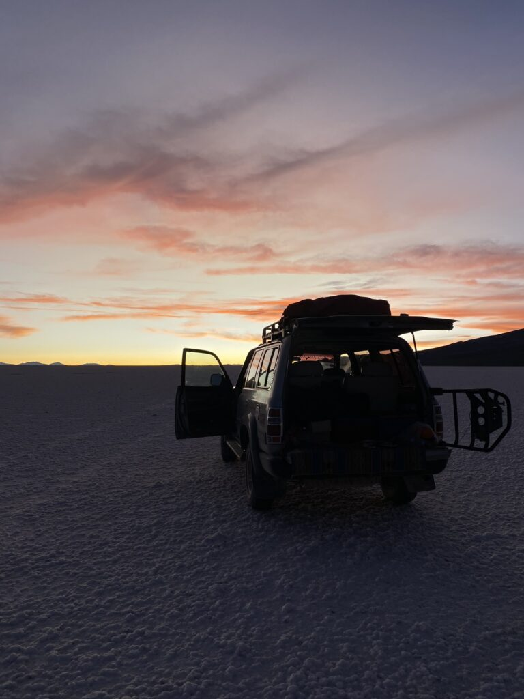

Ik heb Starwars nog nooit gezien en dat ga ik zo houden. Ik heb al een andere planeet gevonden. Ik ben The Next Jedi en met Obi-Wan Kenobi aan mijn zijde veslaan we Red Father, op wiens kop de ultieme beloning wacht.
In een groep met, uiteraard, een overtal aan Nederlanders verplaatsen we ons vijf dagen in een jeep door het zuidwesten van Bolivia. Het is een uniek landschap zoals ik nog nooit eerder heb gezien dat maar matig te vangen valt in een cameralens. Geen menselijke resten, op hier en daar een verloren autoband na. Eindeloosheid met maar een paar mensen op honderden vierkante kilometer, geen enkele asfaltweg te bekennen. Bergen die alle tinten bruin, rood en wit aannemen. Rode, groene, blauwe, zwarte en witte meren die de horizon vergroten, ‘s nachts de vissen beschermen met een laagje ijs en overdag ingenomen worden door zwartroze flamengo’s. Zij zonderen zich af van de huppelende struisvogels, koelbloedige lama’s, springende alpaca’s, vluchtige knaagdieren en verstoppertje spelende vossen en puma’s.



Van bloedhete vergane mijndorpen tot de Chillense grens en waterkoude bergtoppen. Van verlaten mijnen tot treinkerkhoven. Liggen we het ene moment nog in ontspannende hotsprings, staan we een half uur later boven een stollende krater die stinkende dampwolken en klotsend magmawater uitstoot. Ooit spuwde de mond van de vulkaan ook gigantische rotsblokken uit, die in formaties tientallen kilometers verderop zijn beland en we nu beklauteren.
Het adembenemendste overzicht is die van de rode lagune. Kleuren schuiven over elkaar heen en verdwijnen weer. Fluncturerend doch een geheel, verschillende puzzels binnen een groter kunstwerk. De waterdampen stijgen op onder de knalgele ochtendzon. De helderblauwe lucht is het decor voor het natte landschap dat zich van het rode water en de gevormde eilandjes ontvouwt tot de egale bergen.
Slapen doen we tussen vier betonnen muren en onder een golfplaatdak. Van 25 graden overdag kan het tot -20 worden in de nacht. Met zes dekens slaan we ons er doorheen. Wonderbaarlijk genoeg zijn er na uren rijden door de wildernis over hobbelige grindwegen kleine dorpjes te vinden. Als er zelfs een café op ons pad komt, laten we de sterrenhemel voor wat het is en nemen we de kroeg over. Een pingpongtafel blijkt het hoofdingrediënt om de groep los te laten komen. De eigenaar kijkt vol verwondering naar de jolige rond-de-tafel-sessie. De avond eindigt met potjes pool tegen de soms wat aanstootgevende gids.
De apotheose waar we de tour mee eindigen, is de aanblik van de beroemde zoutvlaktes, waar Starwars werd opgenomen. De ijstijd en vulkanische uitstoten maakten van deze zee een oneindige witte vlakte. We missen een klein laagje water die van de omgeving één grote spiegel kan maken, maar de belevenis blijft onbeschrijfelijk. We staan om 04:00 uur op om de verbluffende zonsondergang te ervaren. Rillend, maar onder de indruk, krijgen we plakken cake als krachtvoer voor de lange dag. Als de Benelux-gang zich verplaatst naar eindpunt Uyuni, rijden wij met twee Fransen naar de voet van de Tunupa vulkaan, die imposant boven de zoutvlaktes uittorent. Van 3600 meter hoogte klimmen we naar 5200 meter hoogte. Het het laatste steile stuk is bijna ondraaglijk. Cocabladeren, handenvol snacks en elke minuut rust helpen ons er doorheen. Sociaal contact vaagt weg, terwijl de top maar tergend langzaam dichterbij komt. Eenmaal hijgend boven, blijkt de krater te bestaan uit laagjes schoonheid en het uitzicht op de vlaktes verveelt nooit. Na een chaotische sprint naar beneden is een zonsondergang op het zout de kers op de taart.




Uyuni is een stad van niks en uitgeput zijn we daar alleen voor onze eerste nachtbus naar La Paz, waar ik wat ziekjes aankom. Een relaxte plek om aan te sterken is het rooftop hostel met uitzicht over de skyline van de grootste stad van het land. Kabelbanen in skilift-stijl torenen boven het chaotische verkeer uit en zijn het ideale vervoer om aan de andere kant van de stad te komen. Nog een week Bolivia opslurpen voordat we ons wagen aan het land van de culinaire upgrade, de oude inca’s en Jefferson Farfán.
